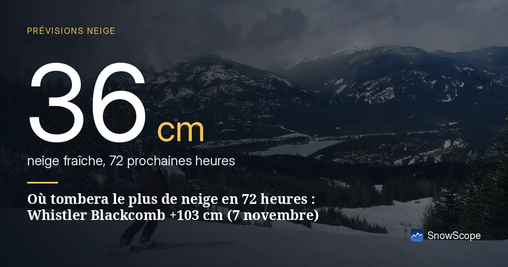
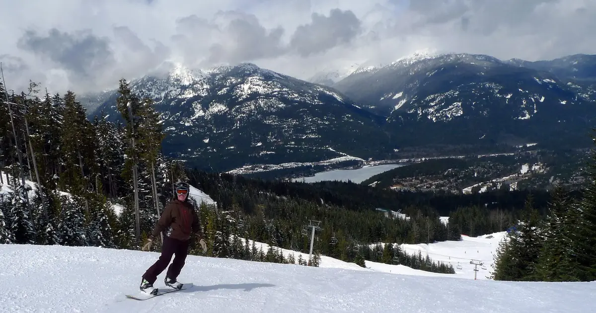
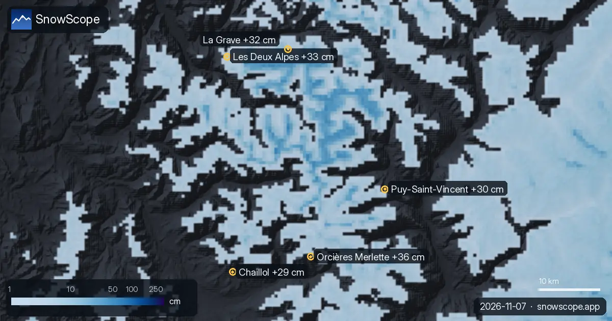
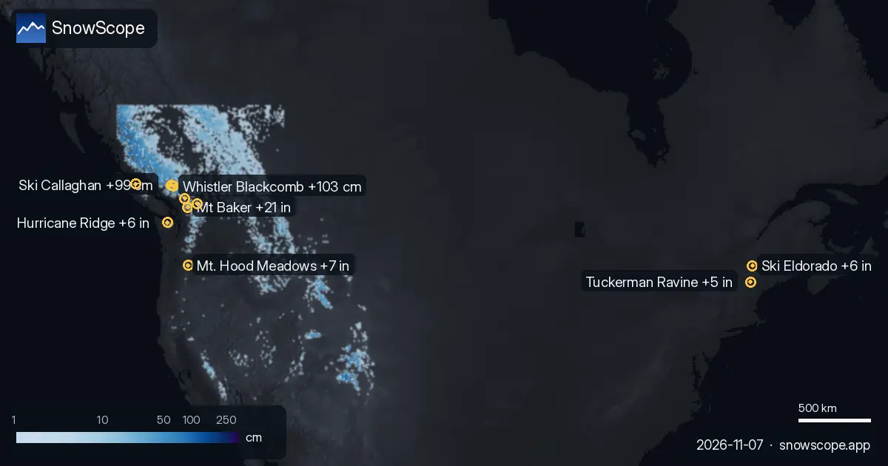

Où tombera le plus de neige en 72 heures : Whistler Blackcomb +103 cm (7 novembre)
Whistler Blackcomb connaîtra les chutes les plus importantes sur les trois régions dans les trois jours à venir, avec 103 cm prévus d'ici le 10 novembre. En Europe, Orcières Merlette mène les Alpes avec 36 cm attendus sur la même période. Ces prévisions dépendent de la position de la limite de neige : la poudre tombe au-dessus, tandis que la neige mouillée ou la pluie tombent en dessous.
Consultez les prévisions neige en temps réel pour Whistler Blackcomb sur l'application SnowScopeHauteurs de neige, alertes poudreuse et carte 3D, gratuitement.
L'ouest du Canada en avant
Whistler Blackcomb domine la prévision avec 67 cm attendus dans les 24 prochaines heures et 103 cm d'ici le 10 novembre. La limite de neige reste basse à 1 300 m, ce qui signifie que la majeure partie de la montagne est en zone de poudre. Ski Callaghan suit de près avec 62 cm demain et 99 cm d'ici la fin de la période, également avec une limite de neige près de 1 200 m.
Mount Cain Alpine Park recevra 46 cm le premier jour et 74 cm au total, avec une limite de neige encore plus basse à 1 200 m. Ces trois stations font face au système le plus humide de la saison jusqu'à présent, alimenté par l'humidité du Pacifique. Le timing est crucial : 67 cm en une seule journée à Whistler signifie des descentes en poudre immédiatement avant que le soleil ne ramollisse la neige fraîche.
| # | Station | Région | +24 h | +72 h | Limite pluie-neige |
|---|---|---|---|---|---|
| 1 | Orcières Merlette | Alpes · France | 0 cm | 36 cm | 2 500 m |
| 2 | Les Deux Alpes | Alpes · France | 0 cm | 33 cm | 2 700 m |
| 3 | La Grave | Alpes · France | 0 cm | 32 cm | 2 900 m |
| 4 | Puy-Saint-Vincent | Alpes · France | 0 cm | 30 cm | 2 500 m |
| 5 | Chaillol | Alpes · France | 0 cm | 29 cm | 2 600 m |
| 6 | Alpe d'Huez Grand Domaine | Alpes · France | 0 cm | 28 cm | 2 600 m |
| 7 | Domaine Alpin du Col d'Ornon | Alpes · France | 0 cm | 28 cm | 2 600 m |
| 8 | Grindelwald | Alpes · Suisse | 0 cm | 27 cm | 2 700 m |
| # | Station | Région | +24 h | +72 h | Limite pluie-neige |
|---|---|---|---|---|---|
| 1 | Mt Baker | Ouest américain · États-Unis | 11 in (29 cm) | 21 in (53 cm) | 5 900 ft (1 800 m) |
| 2 | Mt. Hood Meadows | Ouest américain · États-Unis | 3 in (8 cm) | 7 in (18 cm) | 7 500 ft (2 300 m) |
| 3 | Hurricane Ridge | Ouest américain · États-Unis | 5 in (12 cm) | 6 in (14 cm) | 6 600 ft (2 000 m) |
| 4 | Ski Eldorado | Nord-Est américain · Canada | 3 in (7 cm) | 6 in (14 cm) | 6 900 ft (2 100 m) |
| 5 | Tuckerman Ravine | Nord-Est américain · États-Unis | 2 in (6 cm) | 5 in (13 cm) | – |
| 6 | Crystal Mountain | Ouest américain · États-Unis | 2 in (5 cm) | 5 in (13 cm) | 6 600 ft (2 000 m) |
| 7 | Stevens Pass | Ouest américain · États-Unis | 2 in (5 cm) | 5 in (12 cm) | 4 900 ft (1 500 m) |
| 8 | Sahalie Ski Club | Ouest américain · États-Unis | 2 in (5 cm) | 4 in (11 cm) | 6 900 ft (2 100 m) |
| # | Station | Région | +24 h | +72 h | Limite pluie-neige |
|---|---|---|---|---|---|
| 1 | Whistler Blackcomb | Ouest canadien · Canada | 67 cm | 103 cm | 1 300 m |
| 2 | Ski Callaghan | Ouest canadien · Canada | 62 cm | 99 cm | 1 200 m |
| 3 | Mount Cain Alpine Park | Ouest canadien · Canada | 46 cm | 74 cm | 1 200 m |
| 4 | Sasquatch | Ouest canadien · Canada | 23 cm | 29 cm | 1 300 m |
| 5 | Manning Park Resort | Ouest canadien · Canada | 15 cm | 29 cm | 1 600 m |
| 6 | Tweedsmuir Ski Club | Ouest canadien · Canada | 19 cm | 26 cm | 1 100 m |
| 7 | Mount Washington Alpine Resort | Ouest canadien · Canada | 17 cm | 21 cm | 1 300 m |
| 8 | Grouse Mountain | Ouest canadien · Canada | 13 cm | 17 cm | 1 300 m |

Les Alpes françaises voient la neige retardée
Contrairement à la côte du Pacifique, les Alpes font face à un délai avant l'arrivée de la neige. Orcières Merlette, Puy-Saint-Vincent et Chaillol recevront tous zéro neige nouvelle dans les 24 prochaines heures mais en recevront 30–36 cm entre dimanche et mardi. La limite de neige varie de 2 500 m à 2 600 m sur ces stations, donc seul le terrain au-dessus de cette altitude recevra de la vraie poudre.
Les Deux Alpes et La Grave suivent avec 33 cm et 32 cm respectivement d'ici le 10 novembre. La limite de neige plus haute de La Grave à 2 900 m signifie que seul le sommet du pic sera dans la zone idéale. Pour les skieurs sur le terrain principal, une partie de la neige nouvelle arrivera sous forme de neige dense et collante plutôt que de poudre sèche. Le délai—rien aujourd'hui, tout dans les 48 prochaines heures—exige de la patience. Ce n'est pas un événement pour se précipiter demain matin.

L'ouest des États-Unis a sa part
Mt Baker mène les stations des États-Unis avec 29 cm dans les 24 prochaines heures et 53 cm d'ici le 10 novembre. La limite de neige se situe à 1 800 m, donc la partie supérieure de la montagne sera un terrain de poudre de premier choix. Mt. Hood Meadows et Hurricane Ridge en recevront moins—18 cm et 14 cm respectivement—avec des limites de neige plus élevées qui repoussent la meilleure neige vers des zones réduites.

Limite de neige : l'histoire cachée
La prévision de limite de neige vous indique où se trouve vraiment la poudre. À Whistler Blackcomb, elle se situe à 1 300 m ; la plupart du terrain au-dessus de cette altitude restera assez sec pour bien skier. À La Grave, la limite de neige atteint 2 900 m, donc les skieurs sur les descentes à mi-montagne peuvent faire face à de la neige mouillée ou de la gadoue même alors que le sommet reçoit une couche fraîche. Cette limite se déplace avec la température, donc traitez-la comme un guide plutôt qu'une limite stricte.
Au-dessus de la limite de neige, vous obtenez une poudre légère et froide. En dessous, la neige absorbe la pluie ou tombe sous forme de neige mouillée dès le départ. La prévision de limite de neige est construite à partir du niveau de congélation prévu, abaissé d'environ 300 m pour tenir compte de la zone de transition.
Ce que les prévisions peuvent et ne peuvent pas faire
Les stations les mieux classées dans cette prévision ont généralement raison—Whistler Blackcomb recevra presque certainement plus de neige que Grouse Mountain. Les quantités exactes sont moins certaines, en particulier trois jours à l'avance. Un système peut se décaler de 100 km vers le sud et changer les totaux de moitié, ou rester bloqué et laisser tomber plus que prévu. Ces chiffres représentent la prévision SnowScope pour les pentes supérieures au 6 novembre.
Les valeurs des stations sont des estimations à l'échelle de la région ; les valeurs des postes (si publiées par la station) sont des points uniques au sol. Aucune n'est parfaite, mais ensemble elles donnent une image plus claire que l'une ou l'autre seule. Avant de partir et de conduire, vérifiez la prévision une fois de plus la veille de votre voyage.
Quoi emporter et quand partir
Si vous vous dirigez vers l'ouest du Canada, partez peu de temps après l'arrivée de la neige—67 cm à Whistler signifie de la poudre pour une matinée ou deux avant que le soleil et les skieurs n'œuvrent sur la surface. Prévoyez de skier tôt. Aux Alpes, la neige n'arrive que dimanche soir ou lundi, donc partir samedi est prématuré ; mardi ou mercredi matin est plus judicieux.
Conseils aux skieurs
- Whistler Blackcomb et Ski Callaghan : la fenêtre de poudre est courte. Skiez haut et tôt, avant que le soleil de l'après-midi ne ramollisse la neige.
- Stations des Alpes au-dessus de 2 500 m : vous aurez de la vraie poudre. En dessous, attendez-vous à de la neige plus dense et mouillée même alors que la neige fraîche tombe.
- Mt Baker : 29 cm demain est un cadeau. La limite de neige à 1 800 m signifie que la partie supérieure de la montagne est l'endroit à fréquenter.
- Avant de skier hors-piste ou d'aller en randonnée, consultez le bulletin officiel d'avalanche de votre région.
- Recevez une alerte neige dans l'app SnowScope pour savoir quand votre station choisie reçoit de la poudre fraîche.
À propos de ces chiffres
Les hauteurs de neige des stations sont la neige la plus épaisse sur le haut du domaine à la date indiquée ; ce sont des estimations pour une zone, pas une mesure en un point. Les prévisions peuvent changer. Consultez toujours le bulletin d'avalanche officiel avant le hors-piste.
Bulletins d'avalanche officiels: EAWS (Europe) · avalanche.org (US) · Avalanche Canada
Citer ce bulletin
Pour la recherche, l'enseignement ou la presse : chiffres et graphiques réutilisables librement sous CC BY 4.0 avec cette citation.
SnowScope (2026), Où tombera le plus de neige en 72 heures : Whistler Blackcomb +103 cm (7 novembre), https://snowscope.app/blog/fr/2026/11/where-most-snow-falls-next-72-hours-7-november-2026.html, consulté le 2026-11-07
SnowScope (Atlas Labs). (2026, November 7). Où tombera le plus de neige en 72 heures : Whistler Blackcomb +103 cm (7 novembre). SnowScope snow reports. https://snowscope.app/blog/fr/2026/11/where-most-snow-falls-next-72-hours-7-november-2026.html
BibTeX
@misc{snowscope2026wheremostsnowfallsnext72,
author = {{SnowScope (Atlas Labs)}},
title = {Où tombera le plus de neige en 72 heures : Whistler Blackcomb +103 cm (7 novembre)},
year = {2026},
month = nov,
howpublished = {\url{https://snowscope.app/blog/fr/2026/11/where-most-snow-falls-next-72-hours-7-november-2026.html}},
note = {Published 2026-11-07 10:13 UTC; accessed 2026-11-07}
}· CC BY 4.0 · Méthodes, données et outils →
Whistler Blackcomb : neige et température selon l'altitude, cet hiver vs l'hiver dernier (outils) →
Suivre Whistler Blackcomb
Gratuit : un message quand la neige arrive, et la météo chaque matin.
Autres bulletins neige

Quelles stations gardent la neige tout l'hiver ? Nous avons analysé 46 hivers passés. Dans les Alpes, 211 des 1 178 stations sont fiables ; l'Ouest américain en a 77 sur 195. Données du 3 novembre 2026.

La Grave domine les Alpes avec 52 cm prévus en 24 heures au 11 novembre ; la neige précoce arrive des semaines avant l'accumulation maximale.